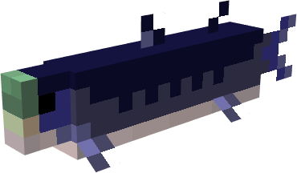

Ancient Aquatic
Fauna List for Ancient Aquatic version 1.0
- Hoploscaphites
- Tylosaurus
- Largest Predatory Marine Reptile
- Ammonites
- Shelled Cephalopods
- Platecarpus
- A Smaller Surface Mosasasur
- Gillicus
- 6 Foot Fish 
- Plioplatecarpus
- Small Deep Water Mosasaur
- Dolichorhynchops (Remodel and Retexture underway)
- Small Plesiosaur
- Xiphactinus
- 15 Foot Predatory Fish
- Ichthyornis
- Small Seabird similiar to Seagull
Common hetermorph ammonite. One can find them inside of all oceans regardless of climate tending to be encountered at lower depths. Their shells are valuable as they concentrate minerals from the water into their shell, creating a glowing crystal of Amethyst and occasionally white Quartz. They are prey items for many